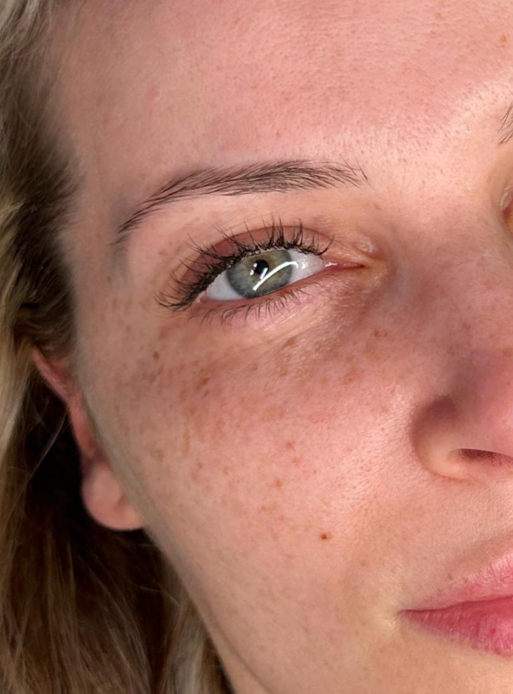
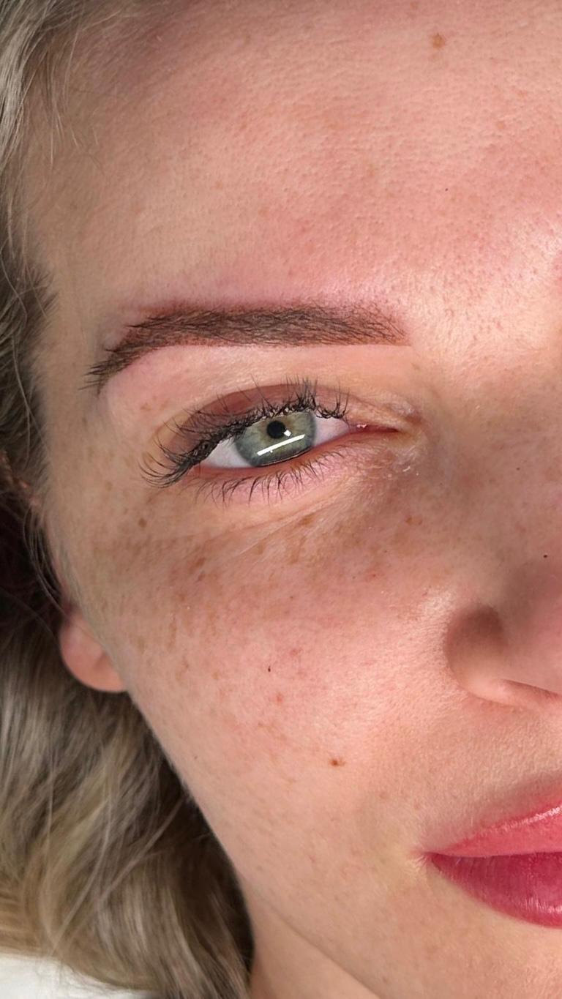
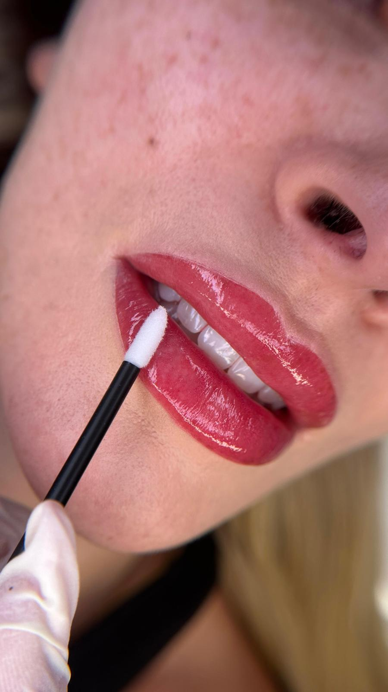
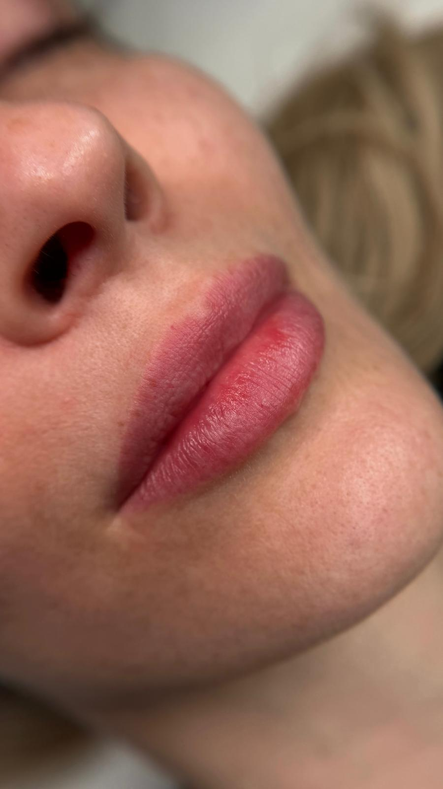
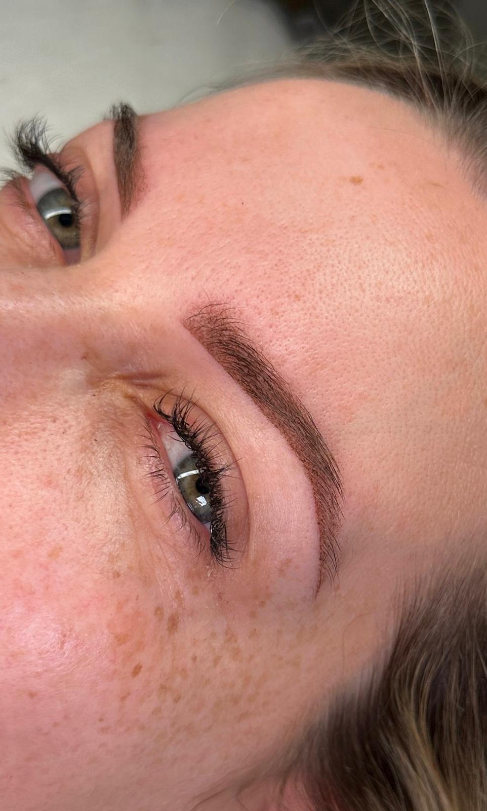
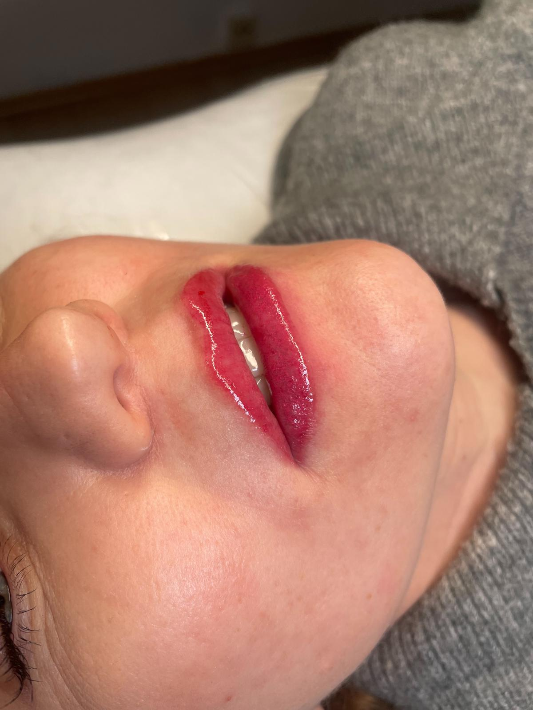
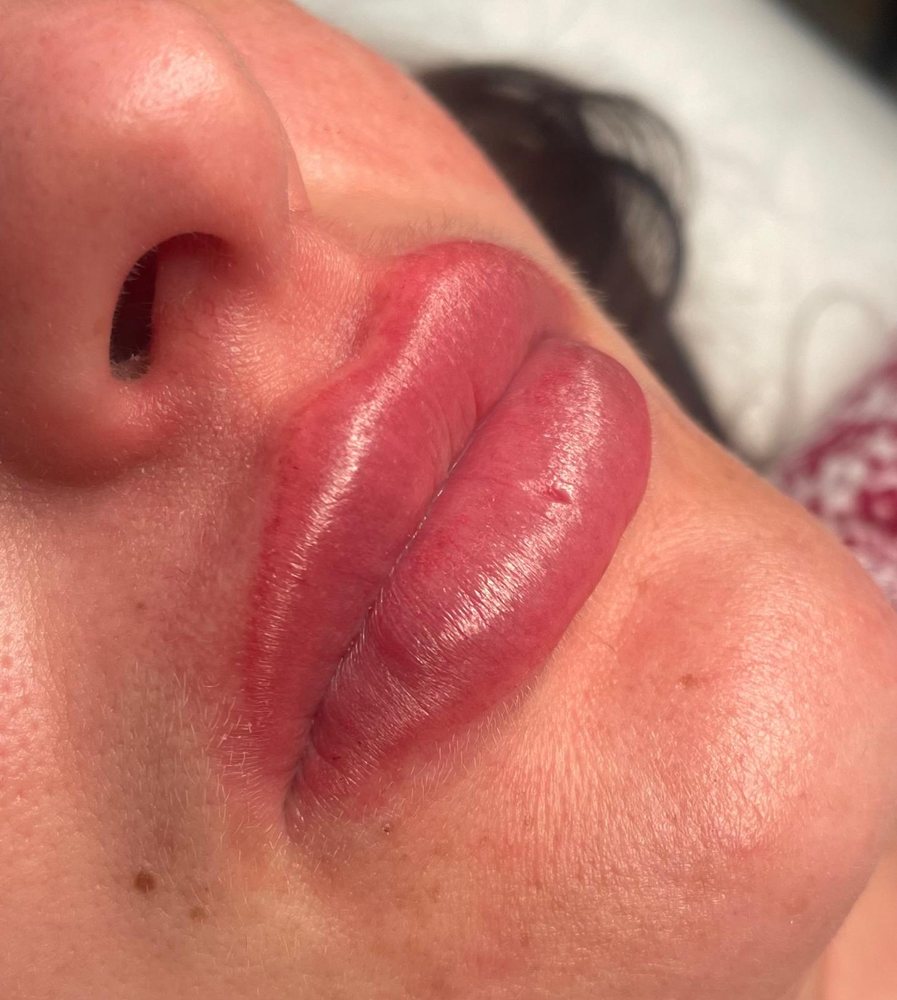
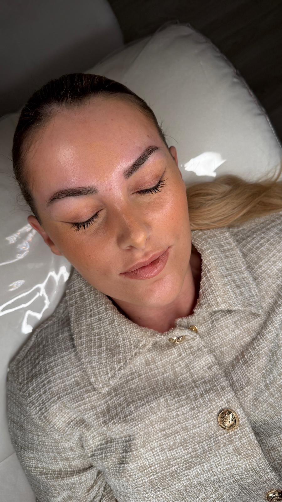
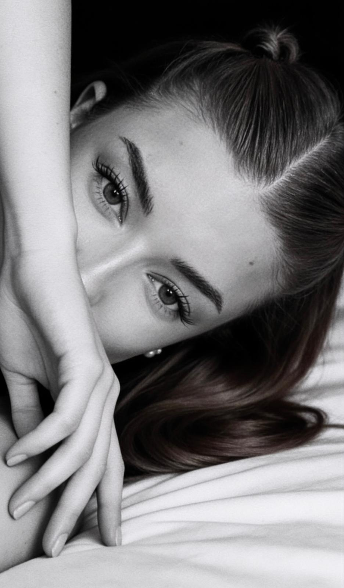

Meine Arbeit
Ergebnisse aus meinem Home-Studio in Köln-Nippes. Jede Behandlung wird auf dein Gesicht, deine Wünsche und deine natürliche Ausstrahlung abgestimmt. So entsteht ein Ergebnis, das nicht nur schön aussieht, sondern sich auch wirklich nach dir anfühlt.
Sieh den Unterschied selbst
Powder Brows einer Kundin. Wische über das Bild und vergleiche die Ausgangssituation mit dem Ergebnis.


Powder Brows, direkt nach der Behandlung. Zum Vergleichen ziehen.
Frisch gestochen oder abgeheilt?
Direkt nach der Behandlung ist die Farbe deutlich intensiver und dunkler, als sie am Ende bleibt. Das ist normal und gehört zum Prozess. In den ersten Tagen wird die Farbe heller, nach etwa vier Wochen ist alles abgeheilt. Erst dann siehst du dein eigentliches Ergebnis: weicher, natürlicher und ruhiger als am Behandlungstag.
Deshalb zeige ich dir beide Zustände. So weißt du vorher, was dich am ersten Tag erwartet und was danach übrig bleibt.


Brows
Form, Verlauf und Farbe werden vor dem ersten Stich vermessen und vorgezeichnet. Das Ziel sind Brauen, die den Blick öffnen und trotzdem so aussehen, als wären sie schon immer da gewesen.

Lips
Bei den Lippen entscheidet der Farbton alles. Er wird auf deinen Hautton und deinen natürlichen Lippenton abgestimmt, damit das Ergebnis frisch wirkt und nicht aufgesetzt.


Liftings & Remover
Nicht jede Veränderung braucht Pigment. Brow und Lash Lifting arbeiten mit dem, was schon da ist. Und wenn eine ältere Pigmentierung im Weg ist, entferne ich sie in ruhigen Schritten, statt sie zu überdecken.


Mehr Ergebnisse auf Instagram
Dort zeige ich laufend neue Behandlungen, frische und abgeheilte Ergebnisse und Einblicke aus dem Studio. Schau gern vorbei, bevor du dich für einen Termin entscheidest.
Profil ansehenDu findest mich auf Instagram unter @nanu_aesthetics_.
Soll dein Ergebnis das nächste sein?
Schreib mir, welche Behandlung dich interessiert. Ich sage dir ehrlich, was zu dir passt.
Jetzt Termin sichernAlle Behandlungen im Überblick: Leistungen und Preise.